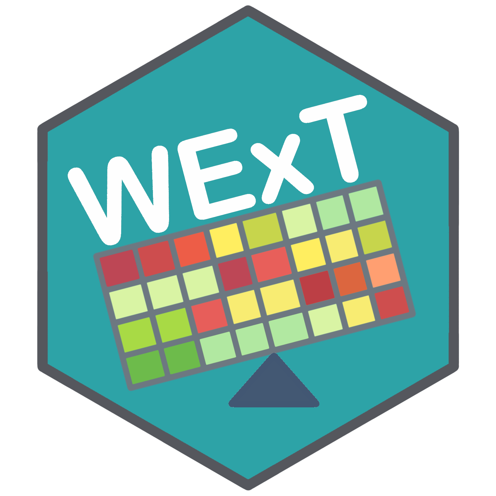

WExT 
The somatic mutations in the pathways that drive cancer development tend to be mutually exclusive across tumors, providing a signal for distinguishing driver mutations from a larger number of random passenger mutations. This mutual exclusivity signal can be confounded by high and highly variable mutation rates across a cohort of samples. Current statistical tests for exclusivity that incorporate both per-gene and per-sample mutational frequencies are computationally expensive and have limited precision.
WExT is a weighted exact test for assessing the significance of mutual exclusivity in an arbitrary number of mutational events. It conditions on the number of samples with a mutation as well as per-event, per-sample mutation probabilities. We provide a recursive formula to compute P-values for the weighted test exactly as well as a highly accurate and efficient saddle-point approximation of the test.
The Weighted Exclusivity Test (WExT) was developed by the Raphael research group at Brown University and originally implemented as a command line tool running in Python. This is an adaptation for R with specific intention to be compatible with the ‘tidyverse’.
Installation
You can install the released version of wext from CRAN with:
or from GitHub using ‘devtools’: